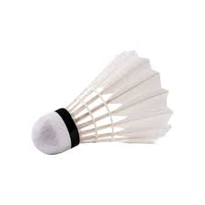
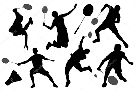

Badminton is a racket sport played by either two opposing players (singles) or two opposing pairs (doubles), who take positions on opposite halves of a rectangular court that is divided by a net. Players score points by striking a shuttlecock with their racket so that it passes over the net and lands in their opponents' half of the court. A rally ends once the shuttlecock has struck the ground, and the shuttlecock may only be struck once by each side before it passes over the net.
 The shuttlecock (or shuttle) is a feathered projectile whose unique aerodynamic properties cause it to fly differently from the balls used in most racket sports; in particular, the feathers create much higher drag, causing the shuttlecock to decelerate more rapidly than a ball. Shuttlecocks have a much higher top speed, when compared to other racket sports. As the shuttlecock flight is stubbornly affected by wind, competitive badminton is always played indoors. A regulation standard shuttlecock weighs around 4.75 to 5.50 g (0.168 to 0.194 oz). It has 16 feathers with each feather 62 to 70 mm (2.4 to 2.8 in) in length, and the diameter of the cork is 25 to 28 mm (0.98 to 1.10 in). The diameter of the circle that the feathers make is around 58 to 68 mm (2.3 to 2.7 in). A shuttlecock is formed from 16 or so overlapping feathers, usually goose or duck, embedded into a rounded cork base. Feathers are plucked from the wings of a live goose or duck, a method which has been deemed cruel by animal rights activists in recent years. The cork is covered with thin leather.To ensure satisfactory flight properties, it is considered preferable to use feathers from right or left wings only in each shuttlecock, and not mix feathers from different wings, as the feathers from different wings are shaped differently.Badminton was known in ancient times; an early form of the sport was played in ancient Greece. In the west, badminton came from a game called battledore and shuttlecock, in which two or more players keep a feathered shuttlecock in the air with small rackets. The new sport was definitively launched in 1873 at the Badminton House, Gloucestershire, owned by the Duke of Beaufort. During that time, the game was referred to as "The Game of Badminton," and the game's official name became Badminton.
There is lot of badminton techniques used to play badmniton in well.some of them are how to grip and swing the racquet, Understand the latest scoring system, in/out rules, the size and layout of the badminton court and fouls to improve your game.Also Learn how to serve, lob (high hit), drop and smash correctly as well as perform effective backhands and footwork.
 There are three types of shots1- Clearing (or Lobbing)
2- Drop Shots
3- Smash
Badminton is more than just an outdoor activity; it is the ultimate form of exercise. Badminton has numerous advantages. It improves an individual's overall fitness by strengthening muscles and burning fat. It regulates weight and avoids obesity. it is help to stay us healthy life.I think badminton is more than a sport.